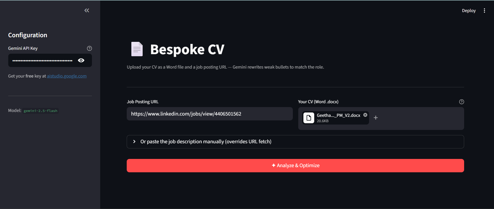
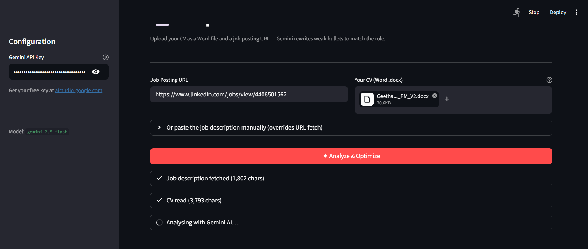
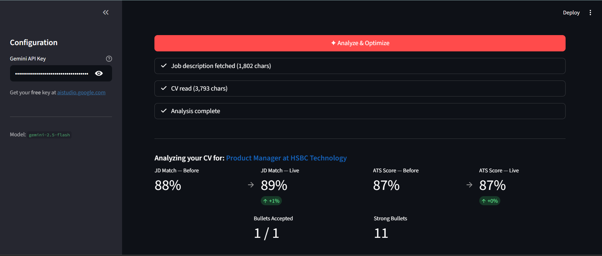
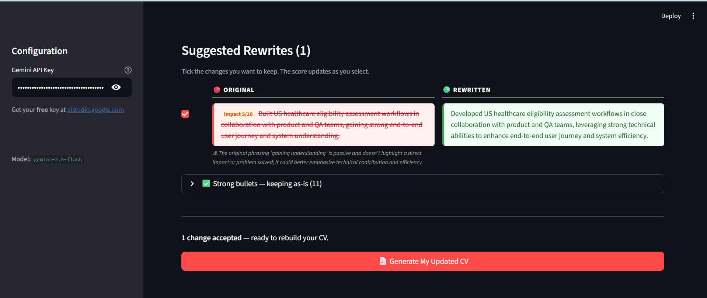
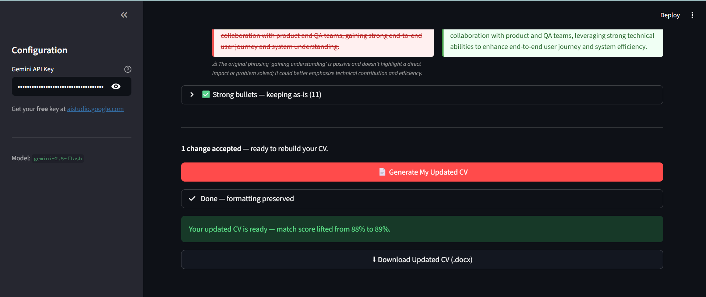

Bespoke CV
Agentic AI tool that rewrites your CV for every job, surgically not generically
Context
The Problem
Product
The Solution
- Upload your CV and paste a job URL. Bespoke CV extracts and parses the full job description automatically.
- Gemini 2.5 Flash identifies only the weak or misaligned bullets, leaving strong ones untouched.
- A side-by-side diff shows every proposed change. You accept or reject each edit individually.
- A live ATS score and JD match score update in real time as you accept changes.
- Downloads as a
.docxwith your original formatting, fonts, and structure fully preserved.
Walkthrough
How It Works
Upload a DOCX and paste the job listing URL. BeautifulSoup extracts and parses the JD; pdfplumber extracts your CV text.

Gemini 2.5 Flash reads both documents and identifies which bullets to rewrite, with temperature=0 for deterministic, consistent output every time.

An ATS keyword score and JD match percentage surface immediately. Both update live as you accept or reject suggested edits. The JD match score is weighted by bullet-level impact: each bullet is individually scored for impact (1-10) and the overall score reflects the weighted average, not just keyword presence. ATS keywords from the JD are deliberately woven into the rewritten bullets, so the ATS score improves through the rewrites themselves rather than through a separate keyword-stuffing step.

Review every proposed rewrite in a before/after diff. Accept what fits, reject what doesn't. The ATS and JD match scores update with each decision. Each rewritten bullet includes an explanation of which JD keywords were incorporated and why, so you understand exactly what changed and how it improves your ATS match.

Export as .docx with your original formatting, fonts, and structure fully intact, ready to submit. No cleanup needed.

Demo
See It in Action
Watch Bespoke CV in action, from job URL to tailored CV in under 2 minutes.
Thinking
Key Design Decisions
.docx via python-docx, with layout reconstructed from the original file, means no reformatting work for the user after download.
Product thinking
PM Decisions
Reflection
What I Learned
Built with
Tech Stack
Roadmap